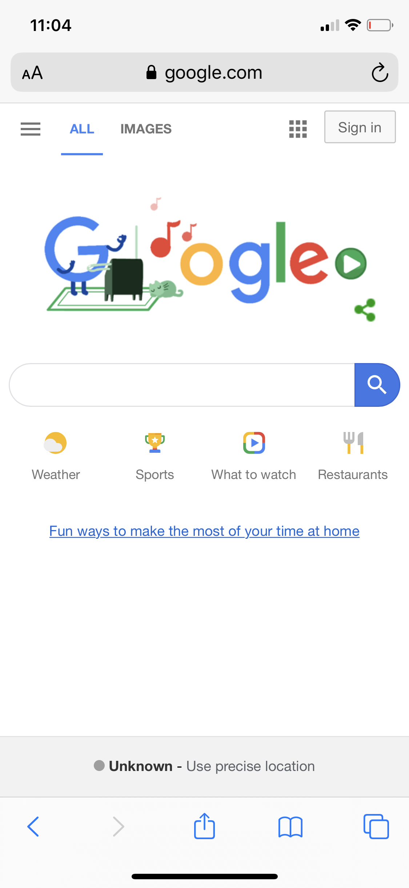

Hick's Law
PBS Kids
pbskids.orgIncreased choices equates to increased time to make a decision. This is Hick's Law. Limited choices improves usability in a web design. PBS Kids designed their website homepage with two main options, "Games" and "Videos". This friendly application of Hick's Law makes navigation of their site more user friendly.
Occam's Razor

Occam's Razor is a design principle which means simplicity is best. Google's homepage is very simple. A navigation bar offers more options to other services, however their main page is a simple search bar with for subcategories that act as links to other options. When viewing this page on a mobile devie you don't even need to scroll a lengthy page.
White Space
The Church of Jesus Christ of Latter-Day Saints
churchofjesuschrist.org
White space is the empty portions of any design. Use of white space in a web design allow space for the viewer's eyes to rest. It can be used to add emphasis and heirarchy to messages such as in the header of the website for the Church of Jesus Christ of Latter-Day Saints. The white space surrounding the name of the church grabs the viewer's attention and prioritizes the message.